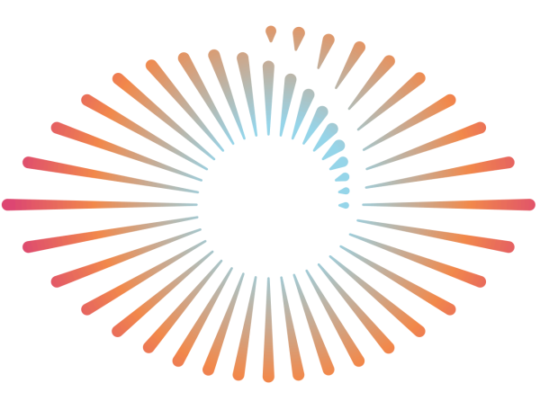

<nav class="relative flex bg-white shadow-sm">
    <div class="container mx-auto flex flex-wrap items-center content-center">
        <div class="flex items-center content-center flex-grow justify-center w-full lg:w-auto gap-2">
            
            <h2 class="mb-0">Neolook</h2>
            <span class="text-brand-500 text-light ">S2S Family</span>
        </div>
        <div class="lg:flex flex-grow-0 items-center hidden" id="example-collapse-navbar">
            <ul class="flex">
                <li class="nav-item">
                    <a class="flex items-center text-sm text-neutral-400 hover:text-neutral-500" href="#pablo">
                        <app-icon _ngcontent-fxk-c26="" name="logout" class="text-neutral-400" _nghost-fxk-c16=""
                            ng-reflect-name="group"><span _ngcontent-fxk-c16=""
                                class="material-icons-round">group</span></app-icon>
                        <span class="ml-2">Log out</span>
                    </a>
                </li>
            </ul>
        </div>
    </div>
</nav>
<script>
    function toggleNavbar(collapseID) {
        document.getElementById(collapseID).classList.toggle("hidden");
        document.getElementById(collapseID).classList.toggle("flex");
    }
</script>